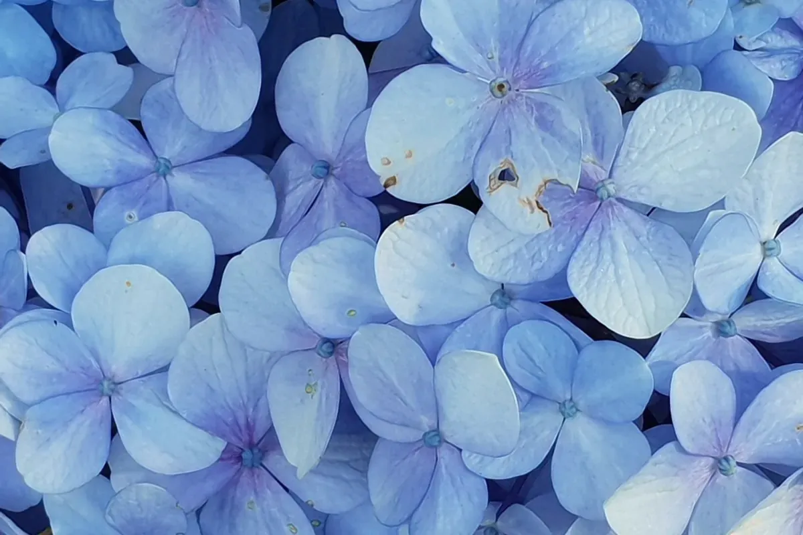
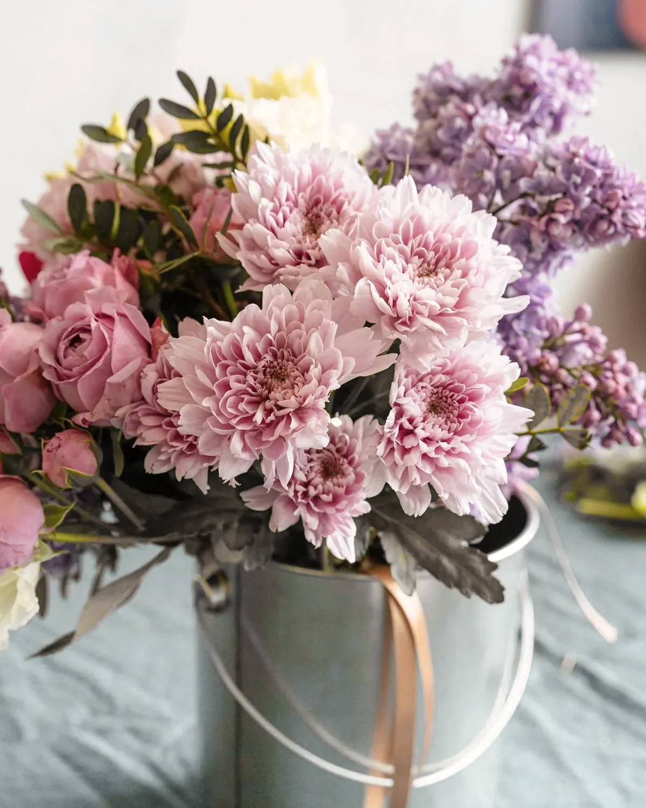
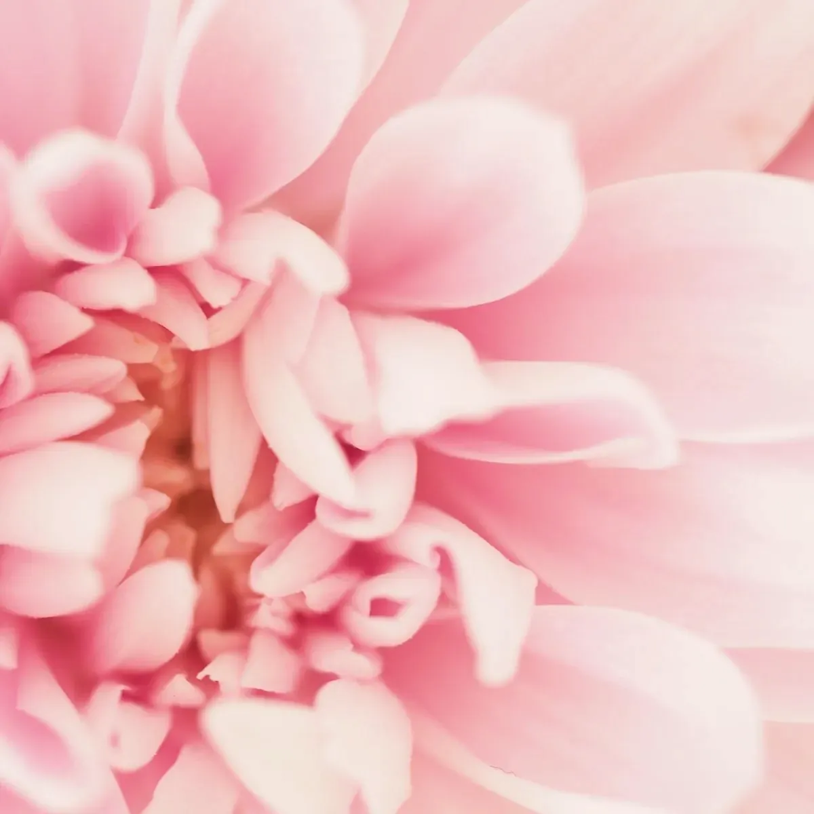

What’s in flowerand why I won’t promise you peonies in October
I’ll always tell you what’s good that week, even when it isn’t what you asked for.
Late winter into spring
Ranunculus, anemones, the first sweet peas
Spring into early summer
Peonies, stocks, sweet peas, lilac while it lasts
High summer
Garden roses, hydrangea, the last of the stocks
Autumn
Hydrangea turning, dahlias, late garden roses
Late winter into spring
Ranunculus, anemones and the first sweet peas. Cold, clean colours, and blues that are actually blue if you catch them.


Spring into early summer
Peonies, stocks, sweet peas, and lilac while it lasts. This is the loud bit of the year and the buckets are heavy.


High summer into autumn
Garden roses, hydrangea, then dahlias and hydrangea turning. Everything gets bigger and slightly blown, which suits a party.


Flowers run to their own timing, and a warm spring can move everything. When we talk about your look I’ll tell you what to expect for your month, and what I’d use instead if it doesn’t turn up.